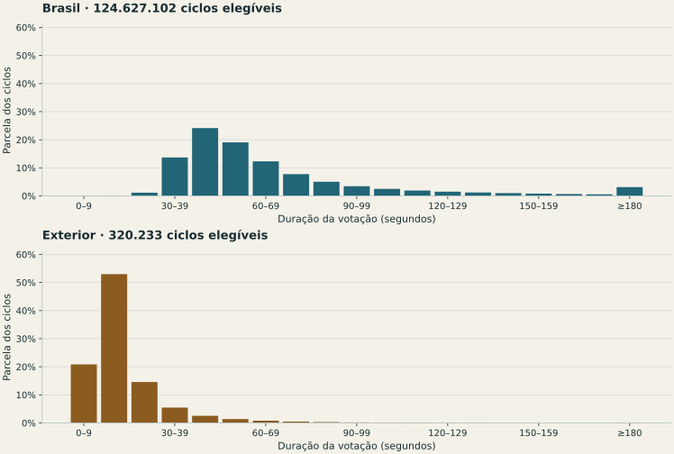

Habilitação
Do identificador digitado pelo mesário até a liberação do eleitor. Inclui as etapas eletrônicas observadas; não inclui toda a conferência documental.
Primeiro turno · 4 de outubro de 2026 · Auditoria da operação
Os logs permitem medir o tempo entre habilitação e voto computado, distinguir formas de identificação e localizar interrupções. Esta análise acrescenta 18 diagnósticos aos 12 critérios históricos. Cada registro vem com uma regra e com o que falta conferir.
Em 11 seções, a contagem dos eventos ou a reconstrução dos ciclos ainda não reproduz o comparecimento do BU. São casos para conferir arquivos e contingências; a diferença não identifica alteração de votos.
A regra de duração sinalizou 0 seções mais rápidas e 855 mais lentas que a referência comparável. A regra de habilitação biográfica sinalizou 1.506. Cada uma usa seu próprio conjunto elegível e limite mínimo de diferença.
O sistema registrou 19 eventos de falha na verificação de assinatura: 17 seguidos de SUCESSO para o mesmo arquivo e urna, 2 sem sucesso posterior localizado e 0 com ordem temporal incerta. O sucesso posterior também é evidência e aparece na ficha, junto do erro.
Há 10.792 eventos ERRO/FATAL no dia. Nas 498.895 seções cuja janela pôde ser delimitada, 8.423 ficaram entre a primeira habilitação reconstruída e o último cômputo, e 2.353 fora dela. Um evento não equivale a uma seção nem a uma falha sem recuperação.
Exemplos escolhidos para mostrar situações distintas. Não são amostra representativa nem lista dos casos mais graves.
A verificação de /dsk/fe/estatico/infomidia.vsc registrou ERRO às 06:56:39 e SUCESSO às 07:00:19. As três categorias de habilitação e o comparecimento fecham com o BU. O sucesso posterior faz parte do registro e não deve ser omitido.
São mensagens do próprio sistema, sem validação criptográfica independente nesta análise.
SHA-256: fa45166090c4d8eaa3166e1ff0daa3b35c79094b6d206f14ba5d4a5630db1118
O pacote reúne 135 cômputos de uma urna e 136 da outra. A identidade da primeira está registrada na véspera, quando ela já estava ligada. A leitura conjunta reconcilia 271 cômputos, 271 ciclos e as três categorias com o BU.
Uma contagem baseada só no arquivo final perderia o fragmento anterior. Este exemplo mostra por que é preciso abrir o pacote completo.
SHA-256: 5dfc3f9c0c9741335d0b047c364801476c94b385d4abf0683a2be35e5aacfa97
O BU registra 247 comparecimentos; os dois fragmentos fornecidos registram 232 cômputos. Os registros do dia começam às 10:18 e às 10:53; há mensagem de contingência executada com sucesso. Os 15 eventos anteriores não foram localizados no pacote consultado.
É uma diferença documental a reconciliar com os registros anteriores e a ata. Não identifica votos adicionados ou retirados.
SHA-256: 4dce5d50742734d540b30f68a66a2fe2149f881cff471935113f7e8455540bf7
O arquivo contém literalmente “Eleitor foi ha`ilitado”, além de outras mensagens com caracteres inesperados. Os 311 eventos exatos de cômputo fecham com o BU; o leitor reconstrói 309 ciclos, pois não corrige eventos por semelhança.
Os bytes coincidem com o SHA-256 arquivado. Isso localiza a limitação no documento consultado, sem identificar sua causa física nem demonstrar alteração de votos.
SHA-256: fb352edc2cf14a6f4616574ec402ca87f5507860c7dd52248cd3a4df48f84bfa
O registro passa de 08:32:21 para 07:36:00 e contém a aplicação de ajuste de data e hora. Preservando a ordem de escrita do arquivo, os 260 cômputos, os 260 ciclos e as categorias de habilitação fecham com o BU. As durações ficam fora das comparações.
Ordenar esses eventos apenas pelo carimbo criaria um ciclo incompleto artificial. A inconsistência do relógio exige separar a confiabilidade dos tempos da reconciliação das contagens.
SHA-256: 623c65e5f80e0f76ca42c08f1d4ffd0a7af4b37290b4975b2d5218167f486bcb
O pacote da seção 175 inclui um fragmento identificado como seção 181. Os 100 cômputos desse identificador foram excluídos; não podem ser atribuídos à seção 175. Os dois identificadores compatíveis com a seção 175 somam 136 cômputos, contra 272 comparecimentos no BU.
A diferença restante pede os registros corretos das urnas e da contingência. Misturar o fragmento de outra seção não reconcilia o documento nem demonstra transferência de votos.
SHA-256: 8e10d4a80b55eb6da3e35ee3948c8b08e5b26e205454b214fc7e3c948bae6e2f
Do identificador digitado pelo mesário até a liberação do eleitor. Inclui as etapas eletrônicas observadas; não inclui toda a conferência documental.
Da habilitação ao evento de voto computado. Ciclos suspensos parcialmente ficam fora da duração de um voto completo.
Entre dois cômputos consecutivos. Mistura ociosidade, identificação e votação. Um intervalo longo não demonstra fila ou paralisação.
Os logs não revelam a escolha do eleitor. Nenhuma opção de voto ou identificação pessoal é reconstruída nesta análise. Os tempos são agregados por seção.
68,4 segundos
Média de 124.627.102 ciclos completos elegíveis, ponderada pelo número de ciclos, nas seções lidas. Mediana: 55,0 s; cerca de 90% dos ciclos duraram até 114,0 s.
17,9 segundos
Média de 320.233 ciclos completos elegíveis, ponderada pelo número de ciclos, nas seções lidas. Mediana: 13,0 s; cerca de 90% dos ciclos duraram até 32,0 s.

| Território | Confirmações de cargo | Ciclos | Média (segundos) |
|---|---|---|---|
| Brasil | 1 | 165.335 | 12,6 |
| Brasil | 6 | 124.459.322 | 68,5 |
| Brasil | 7 | 2.445 | 75,9 |
| Exterior | 1 | 320.233 | 17,9 |
Seções com modelos mistos, indeterminados ou divergentes entre log e BU ficam fora da comparação de tempos e das referências de biometria. A comparação entre seções usa o mesmo número de confirmações de cargo no ciclo, a mesma UF e o mesmo modelo de urna. No exterior há apenas a eleição presidencial; suas seções não são comparadas com seções brasileiras de seis confirmações. A média acima descreve somente o conjunto já lido; enquanto a coleta estiver incompleta, não é estimativa representativa do país.
Reconhecimento biométrico é a habilitação registrada como biométrica. Habilitação biográfica é o procedimento de dado pessoal depois da tentativa de reconhecimento, seguido da liberação. Sem biometria é a terceira contagem do BU. As três contagens precisam reproduzir o boletim antes de uma seção entrar na comparação.
A taxa biográfica divide biográficas por biométricas mais biográficas. A taxa sem biometria divide a terceira categoria pelo comparecimento. Compará-las como se fossem o mesmo percentual troca o denominador e pode criar um falso diagnóstico.
A referência é a mediana das seções da mesma zona, município e modelo, com pelo menos 30 seções elegíveis e denominador de 50 pessoas em cada uma. Sem esse suporte, a referência fica ausente. Idade, qualidade das digitais e cobertura cadastral continuam sem controle individual.
| Território | Seções reconciliadas | Biométricas | Biográficas | Sem biometria |
|---|---|---|---|---|
| Brasil | 497.884 | 109.648.332 | 8.342.032 | 6.940.063 |
Os totais acima incluem somente seções cujas três categorias e comparecimento fecharam entre log e BU. Não incluem BUs sem esses campos e não estimam as categorias ausentes.
As contagens se sobrepõem. Um único reinício pode gerar mais de um diagnóstico. Os registros não aumentam automaticamente a pontuação histórica e não servem para estimar probabilidade de fraude. ALERTA costuma incluir digitação inválida ou pergunta do sistema ao mesário; ele não é tratado como ERRO.
tempo · 0 seções / 497.805 avaliáveis
Mediana abaixo da referência menos 4 escalas robustas e menor que metade dela; ≥30 ciclos completos do mesmo número de cargos.
Rapidez não identifica voto automatizado. Familiaridade, idade e quantidade de cargos afetam o tempo.
Conferir: Conferir os ciclos completos, o número de cargos e a ata, sem associar horários a pessoas ou opções de voto.
Ver no mapatempo · 855 seções / 497.805 avaliáveis
Mediana acima da referência mais 4 escalas robustas e maior que 1,5 vez a referência; ≥30 ciclos completos.
Dificuldade de uso, acessibilidade e perfil etário podem explicar a diferença.
Conferir: Conferir apoio de acessibilidade, orientação da mesa, teclado e ocorrências da ata.
Ver no mapatempo · 595 seções / 497.805 avaliáveis
Mediana entre identificador digitado e habilitação acima da referência mais 4 escalas robustas, com excesso ≥20 segundos e ao menos 30 etapas observadas.
O log mede a etapa eletrônica após a digitação. Não mede o tempo total na fila.
Conferir: Conferir dificuldades de leitura das digitais, cadastro e atendimento documentado na ata.
Ver no mapabiometria · 1.506 seções / 438.493 avaliáveis
Biográficas / (biométricas + biográficas) acima da referência mais 4 escalas robustas e ≥10 pontos percentuais acima; denominador ≥50.
A comparação na mesma zona e modelo não controla idade, ocupação ou qualidade do cadastro. Procedimento previsto não é voto irregular.
Conferir: Conferir tentativas de reconhecimento, habilitações biográficas e documentação da mesa.
Ver no mapabiometria · 5.918 seções / 438.714 avaliáveis
Sem biometria / comparecimento acima da referência mais 4 escalas robustas e ≥10 pontos percentuais acima; comparecimento ≥50.
Diferenças de cadastramento biométrico são uma explicação possível. Não confundir com falha de reconhecimento.
Conferir: Comparar a cobertura do cadastro da seção e do local antes de atribuir a taxa à operação da urna.
Ver no mapaoperacao · 3.140 seções / 499.176 avaliáveis
Ao menos 3 suspensões e taxa ≥1% dos computados mais suspensões sem voto.
Suspensão pode ocorrer por abandono ou dificuldade. Voto parcial e suspensão sem voto são eventos diferentes.
Conferir: Conferir motivo na ata, votos parciais e nulos por suspensão, preservando o sigilo.
Ver no mapaoperacao · 15.680 seções / 499.176 avaliáveis
Ao menos uma nova partida do VOTA depois de um voto computado e antes do encerramento observado.
Reinício pode ser recuperação normal. O evento não demonstra perda ou alteração de votos.
Conferir: Conferir hora, motivo, continuidade das contagens e eventual troca de urna na ata.
Ver no mapaoperacao · 117.017 seções / 499.176 avaliáveis
Ao menos uma mensagem explícita de operação com bateria interna no dia da votação.
A bateria é um recurso de continuidade. O registro não mede duração da falta de energia nem prova defeito.
Conferir: Conferir fornecimento de energia e eventuais interrupções de atendimento na ata.
Ver no mapaoperacao · 5.577 seções / 499.176 avaliáveis
Ao menos um evento classificado ERRO ou FATAL pelo log no dia da votação.
ALERTA não entra aqui: inclui erro de digitação normal. Gravidade e recuperação exigem leitura do evento original.
Conferir: Conferir mensagem, subsistema, recuperação e ata; erro registrado não é necessariamente erro sem solução.
Ver no mapaintegridade · 18 seções / 499.176 avaliáveis
Mensagem de assinatura com [FALHA], [ERRO] ou indicação de inválida.
É o que o software registrou. Esta leitura não é validação criptográfica independente do pacote.
Conferir: Preservar o original e solicitar conferência de assinaturas, mídias, certificados e providências à Justiça Eleitoral.
Ver no mapaqualidade · 281 seções / 499.176 avaliáveis
Horário retrocede dentro do mesmo arquivo e urna, ou há mensagem explícita de ajuste, alteração ou erro do relógio.
Carimbos fora de ordem podem decorrer de gravação assíncrona ou relógio. Por cautela, invalidam os tempos da seção nesta análise, mesmo se o recuo for de apenas um segundo.
Conferir: Conferir ajuste do relógio, continuidade de arquivos e ata antes de interpretar qualquer duração.
Ver no mapaqualidade · 4.545 seções / 499.176 avaliáveis
Voto computado sem habilitação reconhecida, habilitação sobreposta, ciclo aberto ou interrompido pelo reinício.
Pode ser fragmento ausente, contingência ou limitação do leitor. Não significa eleitor sem identificação.
Conferir: Conferir todos os membros do pacote, logs da urna substituída e mensagens não reconhecidas pelo leitor.
Ver no mapaqualidade · 11 seções / 499.176 avaliáveis
Quantidade de eventos de voto computado ou ciclos reconstruídos difere do comparecimento no BU do mesmo hash.
Discrepância documental ou de extração pede reconciliação. Não demonstra alteração do resultado.
Conferir: Conferir identidade, versão, contingência, todos os arquivos do log e BU correspondente.
Ver no mapaqualidade · 11 seções / 497.895 avaliáveis
Categorias dos ciclos computados não reproduzem as três contagens do BU, ou há tipo não reconhecido.
Pode revelar uma mensagem ainda não coberta pelo leitor. A seção fica fora da comparação de biometria.
Conferir: Conferir vocabulário do modelo da urna, ciclos suspensos e totais do BU antes de comparar taxas.
Ver no mapaqualidade · 2 seções / 499.176 avaliáveis
Há voto computado, mas nenhum término da geração da zerésima anterior ao primeiro cômputo foi localizado.
Ausência no pacote lido não prova ausência da emissão ou impressão. Pode faltar arquivo de origem.
Conferir: Conferir zerésima impressa, ata, log anterior e eventuais procedimentos de contingência.
Ver no mapatempo · 17.350 seções / 498.895 avaliáveis
Maior intervalo entre dois votos computados consecutivos ≥1.800 segundos, com relógio sem recuo ou ajuste identificado.
Intervalo inclui ociosidade, identificação e votação. Não mede fila nem prova paralisação.
Conferir: Conferir movimento do local e ocorrências da ata no intervalo, sem inferir quem votou.
Ver no mapaqualidade · 2 seções / 499.176 avaliáveis
Linha com estrutura inválida ou mensagem crítica com uma ou duas substituições de caracteres, mantendo comprimento e prefixo reconhecíveis de habilitação, cômputo ou espera de identificador.
Sinal de qualidade do registro ou vocabulário não reconhecido. O leitor não corrige o texto por aproximação nem deduz alteração de votos ou causa física.
Conferir: Comparar os bytes originais e os fragmentos do pacote; solicitar conferência da cadeia de integridade e dos registros de contingência.
Ver no mapaqualidade · 18 seções / 499.176 avaliáveis
Há identificadores de urna com fase incompatível, identidade de seção divergente ou metadados insuficientes. Seus eventos foram excluídos das contagens.
Pode ser fragmento de outra seção, contingência, metadado ausente ou texto malformado. Eventos excluídos não são atribuídos à seção consultada.
Conferir: Conferir município, zona, seção, fase e número interno nos fragmentos originais e nos registros de contingência, sem misturar contagens de seções diferentes.
Ver no mapaCatálogo: 499.248 seções principais; 499.176 com nome de log de votação (VOTA) no catálogo utilizado, incluindo complementos documentados. Recuperados: 499.176; com SHA-256 igual ao da coleta anterior: 499.062. Lidos e vinculados a um BU: 499.176. Elegíveis para comparação de tempo: 497.918.
Reconsultamos os metadados das 92 seções sem nome de log no catálogo antigo. 41 estavam marcadas como não instaladas; 31 tinham boletins do sistema de apuração, sem log de votação (VOTA) no hash arquivado. Os metadados desses casos listam logSA, uma categoria distinta, não processada neste leitor; o endereço está na ficha da seção. As 20 que antes retornavam 404 agora têm BU e log: 20 já estão incluídas nesta análise, com BU suplementar e fonte na ficha. O banco histórico foi preservado. Respostas, endereços e hashes da reconsulta.
Uma seção sem análise não recebe zero ocorrências. Ausência de publicação, falha de download, formato não reconhecido e falta de BU são limitações distintas. O quadro mostra o estágio desta publicação, em 15/10/2026 às 15:36 (Brasília).
| Situação | Seções |
|---|---|
| Log lido e vinculado ao BU | 499.176 |
| Catálogo anterior sem nome de log | 0 |
| Seção marcada como não instalada no catálogo oficial | 41 |
| BU do sistema de apuração sem log VOTA no hash arquivado | 31 |
| Catálogo sem hash de transmissão | 0 |
| Download ainda pendente | 0 |
| Falha de download após tentativas | 0 |
| Arquivo não localizado no endereço oficial (404) | 0 |
| Resposta recebida não é ZIP | 0 |
| SHA-256 difere do original arquivado | 0 |
| Log recuperado sem BU disponível para reconciliação | 0 |
| Aguardando a versão atual do leitor | 0 |
| Pacote não interpretado pelo leitor | 0 |
| UF | Catalogadas | Logs lidos | Contagem confere | Biometria confere | Tempo elegível |
|---|---|---|---|---|---|
| AC | 2.270 | 2.270 | 2.270 | 2.270 | 2.268 |
| AL | 7.101 | 7.101 | 7.101 | 7.101 | 7.079 |
| AM | 8.157 | 8.157 | 8.157 | 8.157 | 8.155 |
| AP | 1.914 | 1.914 | 1.914 | 1.914 | 1.913 |
| BA | 35.476 | 35.476 | 35.475 | 35.475 | 35.334 |
| CE | 23.765 | 23.765 | 23.765 | 23.765 | 23.722 |
| DF | 6.969 | 6.969 | 6.969 | 6.969 | 6.965 |
| ES | 9.844 | 9.844 | 9.843 | 9.843 | 9.832 |
| GO | 15.686 | 15.686 | 15.686 | 15.686 | 15.670 |
| MA | 18.093 | 18.093 | 18.093 | 18.093 | 18.062 |
| MG | 52.062 | 52.060 | 52.060 | 52.060 | 51.967 |
| MS | 7.106 | 7.106 | 7.106 | 7.106 | 7.101 |
| MT | 8.287 | 8.287 | 8.287 | 8.287 | 8.273 |
| PA | 20.827 | 20.827 | 20.826 | 20.826 | 20.797 |
| PB | 10.712 | 10.712 | 10.712 | 10.712 | 10.688 |
| PE | 21.418 | 21.418 | 21.418 | 21.418 | 21.384 |
| PI | 10.225 | 10.225 | 10.225 | 10.225 | 10.192 |
| PR | 27.142 | 27.142 | 27.142 | 27.142 | 27.092 |
| RJ | 37.675 | 37.675 | 37.673 | 37.673 | 37.528 |
| RN | 8.115 | 8.115 | 8.114 | 8.114 | 8.111 |
| RO | 4.698 | 4.698 | 4.698 | 4.698 | 4.691 |
| RR | 1.519 | 1.519 | 1.519 | 1.519 | 1.518 |
| RS | 27.547 | 27.547 | 27.546 | 27.546 | 27.487 |
| SC | 17.326 | 17.326 | 17.326 | 17.326 | 17.283 |
| SE | 5.923 | 5.923 | 5.923 | 5.923 | 5.886 |
| SP | 103.656 | 103.656 | 103.652 | 103.652 | 103.349 |
| TO | 4.384 | 4.384 | 4.384 | 4.384 | 4.375 |
| Exterior | 1.351 | 1.281 | 1.281 | 0 | 1.196 |
Referência: mediana empírica. Escala robusta: 1,4826 vezes a mediana dos desvios absolutos, com piso de 3 segundos para tempos e de 1 ponto percentual para taxas. A regra principal usa 4 escalas, acompanhada de diferença mínima. As alternativas usam 3 e 5, mantendo os demais requisitos. A própria seção participa da referência. Isso é triagem exploratória, não teste com nível de significância.
| Escalas robustas | Seções com algum diagnóstico | Votação lenta | Habilitação biográfica alta |
|---|---|---|---|
| 3 | 147.016 | 991 | 2.771 |
| 4 | 145.736 | 855 | 1.506 |
| 5 | 144.590 | 469 | 713 |
As colunas comparam critérios sobre a mesma cobertura. Não são milhares de confirmações independentes: sem revisão documental, a multiplicidade e a correlação produzem falsos positivos.
TSE: documentos técnicos das Eleições 2026 · TSE: arquivos transmitidos para totalização. O link do arquivo original e o SHA-256 de cada seção estão na ficha do Politize e no CSV.
Baixar todas as seções analisadas, CSV comprimido · Resumo, regras e cobertura em JSON · Código do leitor e das regras.
python3 scripts/apuracao-2026-logs-coletar.py python3 scripts/apuracao-2026-logs-lacunas.py python3 scripts/apuracao-2026-logs-lacunas.py --preparar-bus python3 scripts/apuracao-2026-logs-lacunas.py --aplicar python3 scripts/apuracao-2026-logs-coletar.py python3 scripts/apuracao-2026-logs-processar.py python3 scripts/apuracao-2026-logs-build.py python3 scripts/fiscais-mapa-build.py
Requer o banco histórico local apuracao/data/secoes_2026.sqlite e as dependências do projeto. A aplicação dos complementos ocorre com o coletor parado. Versão do leitor: 9. Os originais pesados permanecem no acervo local; os agregados e os endereços oficiais são públicos. Contrato completo de reprodução.